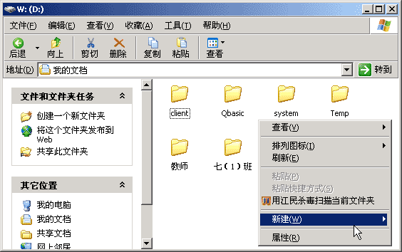
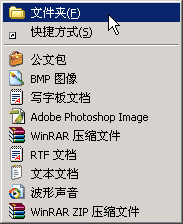
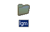

VB程序设计基础
作者：TeliuTe 来源：基础教程网
先给自己创建一个文件夹，然后每次编程前，为每个程序创建一个文件夹，下面我们来看一个练习；
1、打开我的文档
1）在桌面上双击“我的文档”图标，进入文件夹；
2）在空白处单击鼠标右键，在出来的菜单中选择“新建”命令；

3）在出来的下一级菜单中，选择上边的“文件夹”命令；

4）这时在工作区出来一个新的文件夹，名称那儿是蓝色的，按退格键删除里头的“新建文件夹”；
5）然后输入自己姓名的拼音，输好后再用鼠标点一下图标，这样一个自己名字的文件夹就建好了；

6）在图标上双击，进入文件夹看一下，由于是新建的文件夹，里头还是空的，以后每次要新建各个程序文件夹；
本节学习了创建文件夹的基本操作，如果你成功地完成了练习，请继续学习下一课内容；
本教程由86团学校TeliuTe制作|著作权所有
基础教程网：http://teliute.org/
美丽的校园……
转载和引用本站内容，请保留版权信息和本站链接。